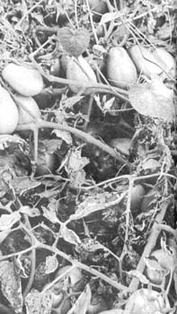

Don't stake late tomatoes . . . not if you want them to survive frosts. Let the plants sprawl as close to the ground as possible, and on a bed of decaying organic mulch if you can. Frost has nipped the leaves of this Roma plant, but 90% of the fruit is still undamaged. Soon, however, it will be time to pick the remaining unripened tomatoes, wrap them in newspaper and store them in a cool room for use as late as Christmas or later.